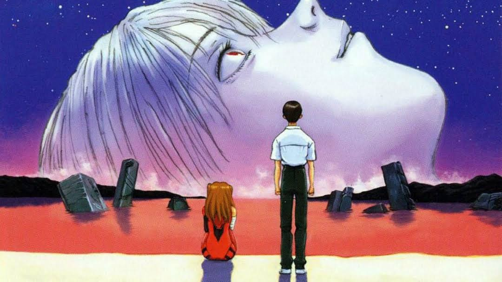

The end of Evangelion
In the apocalyptic conclusion of Neon Genesis Evangelion, humanity faces existential annihilation as the boundary between individual consciousness and collective existence dissolves. Shinji Ikari, the protagonist, is confronted with the enigmatic Instrumentality Project, which aims to merge all human souls into a single, unified entity.
Struggling with his own desires and fears, Shinji ultimately rejects the forced unity, choosing instead to preserve individuality and human connection. This decision leads to the collapse of the apocalyptic scenario and the beginning of a new, uncertain world. The series ends on a note of ambiguity, reflecting both hope and the daunting challenge of rebuilding.
